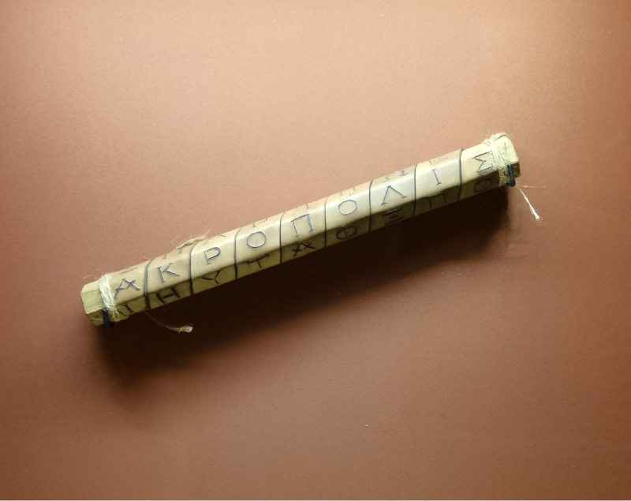

Историческая справка:
По данным историков, в Древней Спарте (487 г. до н.э.) создали первое устройство для шифрования – скитала. Суть его состояла в том, что на цилиндр, диаметр которого был заранее согласован, наматывали тонкий ремень из пергамента и текст выписывался построчно вдоль его оси. Затем ремень сматывался и отправлялся получателю сообщения, который наматывал ремень на цилиндр такого же диаметра, как и у отправителя.
Шифр, который реализует скитала, можно рассматривать как шифр перестановки – тип шифра, когда блоки (буквы, цифры, биты) сообщения меняются местами друг с другом.
Скитала использовалась в войне Спарты против Афин в конце V века до н. э.. Считается, что автором способа взлома шифра скиталы является Аристотель, который наматывал ленту на конусообразную палочку до тех пор, пока не появлялись читаемые куски текста.
